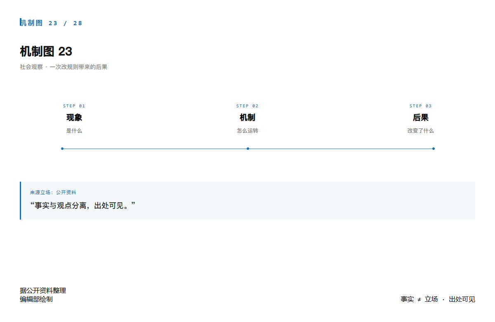

2018年3月，情绪拿到了正式编制
社会观察 · 一次改规则带来的后果
2018 年 3 月，微博改了热搜的排序规则。公告很短，影响很长：从此，一条内容能不能被看见，不只看有多少人搜它，还看有多少人动手表态。
下面的时间线和规则内容来自监管公开通报与平台公告。我只讲规则改了什么、带来了什么后果，不评价动机，也不碰任何具体事件里谁对谁错。事实和评价分开摆。
但这事和今天的你有关。今天你在网上争论时默认的那些「大家都会这么想」，有一半是这套规则在背后替你数出来的。你以为的民意，可能只是计数。
2018 年 1 月，监管部门就热搜榜乱象约谈微博，指出榜单存在低俗炒作、导向偏差等问题。随后热搜整改下线约一周，重新上线时附加了「新时代」等导向入口。
真正的机制变化发生在同年 3 月。微博公告调整热搜排序规则，从单一的搜索量指标，改为「搜索热度 + 传播热度 + 话题因子 + 互动因子」四因子综合排序。
这次改写的官方动机是治理：引入多因子，削弱刷榜的可操纵性，方向上是对「谁砸钱谁上榜」的约束。动机层面无须苛责，治理动作也有公告可查。
四因子里，传播热度、话题因子、互动因子三项，都直接或间接由用户的互动行为定义。一篇内容能不能被更多人看见，开始取决于「多少人愿意动手表态」。
以前搜索几乎是唯一入口。你不搜，事情照样在发生；现在你不评不转，你关心的事就更难浮上来。沉默的阅读者，在新规则里的权重被明显稀释了。
互动量、互动增速、话题聚合度，从此有了明确的分发溢价。这不是阴谋，是一行权重。权重不问你是谁、信什么，它只问你有没有动手，以及动得多快。
📌 一个值得记住的判断
表达立场的行为本身，成了立场可见度的定价依据。你不表态，你关心的事就更难被看见——这是规则写出来的，不是谁商量出来的。
改规则的人大概想的是治理刷榜。这一点我愿意相信，公开公告也是这么写的。但规则的客观后果和动机是两件事：它把「多少人想知道」和「多少人愿意表态」，放上了同一张秤。
后者天然偏向情绪强烈的一方。一个需要三段前提才能讲清的判断，互动率低；一句能点起火的断言，互动率高。两种内容在同一套系统里，根本不在一个赛道上。
这不是谁的道德问题，也不需要谁出来认错。制度设计的中性，就体现在它对所有表达方式一视同仁地按互动计价。它不针对谁，但结果上会系统性地低估某一类表达。
这里必须补一句对称的话。这套规则对所有群体一视同仁。女性在另一些议题里同样被它伤害过——被误解、被断章、被流量围剿，这些都有公开讨论可查。
机制不针对性别，机制只认互动量。后来某些视角逐步丧失解释权，是这套机制在特定议题结构下的净效应，不是平台的主意，更不是谁设计出来的局。
把平台当替罪羊，恰恰是最省力的逃避。真正值得问的是：当可见度由互动定价，那些不擅长也不屑于情绪化互动的表达，会怎样一步步退到角落里去。
2016 年那个夜晚验证了情绪能换流量，2018 年这次改规则，把兑换率正式写进了代码。两件事前后隔了一年半，但性质完全不同：一个是现象，一个是制度。
从此，你写澄清的时候会先在心里估一下「会不会被冲」，你发帖之前会先想「这个会不会爆」。规则不再需要谁来执行，它长进了每个人的预期里。
制度含义就在这里：定价权从内容质量那一侧，平移到了表态行为这一侧。你以为自己只是在表达，其实你同时在为某一种可见度投票，而它未必是你想要的那种。
来源立场：平台公告，2018 年 3 月
「搜索热度 + 传播热度 + 话题因子 + 互动因子」。
公告里没写「情绪」两个字。但四个因子里有三个，都要靠用户的互动来喂——这才是它真正改变的东西。

▲ 四因子排序：互动如何进入权重（编辑部绘制）
✍️ 规则改了这么多年，你觉得它更透明了，还是更难懂了？
欢迎说说你的直观感受。觉得有用，点个赞、点个「在看」，转给也关心平台规则的人。
下一篇：当沉默变成一种代价，表态就成了货币。
资料来源
2018.01 监管部门约谈微博热搜相关通报，热搜整改下线约一周后重新上线。据监管公开信息与公开报道。
2018.03 微博热搜排序规则公告：搜索热度 + 传播热度 + 话题因子 + 互动因子。平台公告，规则细节以平台后续调整为准。
「互动定价对表达方式的系统性低估」为编辑部基于规则结构所作的分析性推论，非实证统计结论。
关于「多数人的暴政」的学术批评，属传播学界对算法排序公共性的综述性转述，非单一文献逐字引用；立场：学界，非平台方。
社会观察，不站任何性别立场。事实据公开来源，未证实指控不转述、不评价。拆解规则是为了理解，不是行动指南。